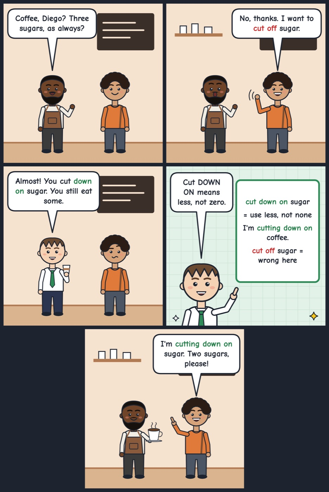

cut down on
To use or do less of something, usually to be healthier or save money.
I'm trying to cut down on sugar, so I only have one biscuit with tea.
Tip: Use it with 'on' plus the thing you reduce (cut down on coffee, cut down on spending); it's a gradual reduction, not stopping completely.
Hear it in conversation
AmiraAre you getting another coffee? That's your third today.
KenI know, I know. I can't sleep properly lately.
AmiraMaybe you should cut down on caffeine in the afternoon.
KenYeah, you're right. Maybe I'll switch to water after lunch.
AmiraTry it for a week and see if you sleep better.
KenOkay, deal. This is my last one for today.
Workbook
1. What does it mean?
In this conversation, what does cut down on mean?
2. Fill the gap
My phone bill is too high, so I need to data when I'm away from Wi-Fi.
3. Choose the best reply
Olena: I spend way too much money on takeaway food.
4. Your turn: speak
Is there anything you have tried to use or do less of recently? Tell me about it.
Show an example answer
I've been trying to cut down on the time I spend on my phone in the evenings. I used to scroll for hours before bed, but now I set a timer for thirty minutes. It's not easy, but I'm sleeping better.
Answer key: cut down on
- 1. D. Use less of something
- 2. cut down on
- 3. A. Maybe you could cut down on it and cook at home more often.
- 4. Example: I've been trying to cut down on the time I spend on my phone in the evenings. I used to scroll for hours before bed, but now I set a timer for thirty minutes. It's not easy, but I'm sleeping better.
See it in a comic
